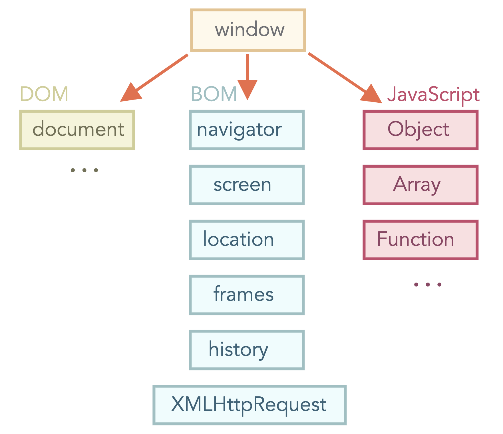

Es un lenguaje de programación interpretado y orientado a eventos que fue crado para dar vida a las páginas web. Los programas en este lenguaje se llaman scripts, se pueden escribir directamente en el HTML de una página web y se ejecutan automáticamente a medida que se carga la página.
JavaScript nace a partir de una navegador que actualmente no existe: NetScape en 1995 por Brendan Eich. Inicialmente fue llamado "LiveScript" y para darle popularidad en ese momento se cambió a JavaScript haciéndolo ver como el hermano menor de JAVA
JavaScript puede ejecutarse en cualquier dispositivo que cuente con un programa llamado "motor o intérprete", el navegador tiene un motor embebido llamado "Máquina virtual de JavaScript"
Existen diferentes motores, entre los más populares se encuentra:
Básicamente lo que hace el motor es leer y analizar el script, luego "compilarlo" a lenguaje máquina que éste por último se ejecuta muy rápidamente
Los progrmas de JavaScript se pueden insertar en casi cualquier parte de un documento HTML con el uso de la etiqueta <script>. Por ejemplo:
<html>
<body>
<p>Antes del script...</p>
<script>
alert('Hola mundo');
</script>
<p>Después del script...</p>
</body>
</html>
Si el código de JavaScript que queremos agregar a nuestro HTML es un montón, entonces es preferible crear un archivo separado de tipo .js y adjuntarlo al HTML con el atributo SRC
<script src="funciones/fun.js"></script>
La ventaja de un archivo separado es que el navegador lo descarga y lo almacena en caché, y cuando otras páginas hacen referencia al mismo, solo lo tienen que tomar de la chaché sin tener que descargarlo de nuevo, lo que reduce el tráfico y hace que las páginas sean más rápidas.
**Mostrar una alerta con un JS interno y uno externo
**ver sublime
Una varibale es un almacén con un nombre para guardar datos. Para generar una variable en JavaScript, se usa la palabra clave let
Una variable debe ser declarada solamente una vez, ya que una declaración doble o repetida es un error.
Existen dos limitantes al momento de definir el nombre de una variable en JavaScript
Cuando el nombre de una variable contiene varias palabras, se suele usar el estilo camelCase donde las palabras van pegadas una detrás de la otra, con cada inicial en mayúscula: miNombreCompleto
Declarar una variable:
let msj;
Asignando datos:
let msj;
msj='Hola';
Mostramos el dato de la variable:
let msj;
msj='Hola';
alert(msj);
Además es importante hacer la aclaración de que variables con nombres fonéticamente iguales pueden ser distintos dependiendo de cómo se escribieron, es decir la variable "manzana" y la variable "MANZANA" son distintas
También existen algunos nombres de variables que no se pueden utilizar, ya que son palabras reservadas del lenguaje.
**Investiga la lista de palabras reservadas de JavaScript
**ver sublime
Window es el objeto raiz de nuestro navegador el cual proporciona métodos para controlarlo
Y este se divide como se muestra en la siguiente imagen:
El objeto document da acceso al contenido de la página y con él podemos cambiar o crear cualquier cosa en la página, por ejemplo:
La estructura de un documento HTML son las etiquetas.
Según el DOM, cada etiqueta es un objeto
El DOM representa HTML como una estructura de árbol de etiquetas, donde cada etiqueta es un nodo y puede tener más etiquetas dentro que serían sus hijos. Por ejemplo, la etiqueta <html> está en la raíz del documento y esta tiene como hijos a la etiqueta head y a la etiqueta body
El DOM nos permite hacer cualquier cosa con sus elementos, pero para poder hacerlo es necesario primero llegar al objeto correspondiente en el DOM
En el siguiente fragmento de código se cambia el color del fondo accediendo a body y modificando sus estilos con le método style
document.body.style.background = "red";
Este evento permite que al dar clic a un elemento en la interfaz se ejecute una función
A continuación un ejemplo de cómo agregar el evento onclick en un elemento HTML que mandará llamar la función colores():
<button onclick="colores()">Da clic para cambiar el color</button>
Implementación del botón:
function colores(){
Alert("Esta función más delante cambiará los colores");
}
Para buscar elementos en un documento podemos usar distintos métodos, en este caso veremos el método getElementById(id) el cuál puede localizar cualquier elemento del documento que contenga un id específico
En el siguiente video se mostrará cómo implementarlo